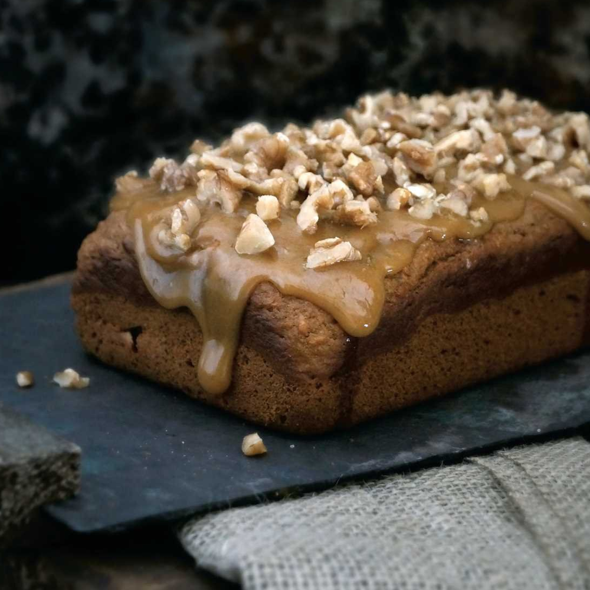

Sweet Potato Bread

Description
SKILL LEVEL - Master
PREP - 15 minutes
BAKING - About 2 hours
Moist, dense, and richly flavored with an array of spices, this popular Northrend bread would be tasty on its own. But topped
with caramel and crunchy nuts, it's absolutely decadent.
Ingredients
- 1 pound sweet potatoes (about 2 medium potatoes)
- 1/4 cup whole milk
- 1 cup dark-brown sugar
- 2 large eggs
- 1/2 cup canola oil
- 1 teaspoon vanilla
- 1 teaspoon Holiday Spices
- 1 teaspoon salt
- 1 teaspoon baking powder
- 12 teaspoon baking soda
- 1/2 cups flour
- Butter, for greasing pan
Topping
- 2 tablespoons salted butter
- 1 cup light brown sugar
- packed 14 cup heavy cream
- warm 14 teaspoon kosher salt
- Dash of vanilla
- Bourbon (optional)
- 14 cup walnuts or pecans, roughly chopped
Steps
- Preheat the oven to 400°F. Using a sharp knife, pierce the
sweet potatoes several times, then place in the oven. Bake for about an hour, or until they are cooked through. Remove and allow to sit until they are cool enough to handle.
1 pound sweet potatoes (about 2 medium potatoes) 4 cup whole milk 1 cup dark-brown sugar 2 large eggs 1 cup canola oil 1 teaspoon vanilla 1 teaspoon Holiday Spices (page 19) 12 teaspoon salt I teaspoon baking powder 12 teaspoon baking soda 12 cups flour Butter, for greasing pan
- Turn down the oven temperature to 325°F and lightly
butter a 9 x 5-inch loaf pan. Scoop the sweet potatoes out of their skins into a bowl and discard the skins. Add the milk and roughly mash the potatoes until there are no large pieces left. Add the sugar, eggs, oil, vanilla, and spices, beating to combine. Add the dry ingredients, scraping the sides of the bowl to make sure everything is incorporated.
- Pour the batter into the loaf pan, and bake for about an
hour, or until a toothpick poked into the middle comes out clean. Allow to cool for at least an hour, then run a butter knife along the sides of the pan and gently invert the pan to tip the bread out. Allow to cool on a wire rack until the bread is no longer warm to the touch. If you like, top with caramel and nuts, as below.
Topping
- 2 tablespoons salted butter 12 cup light brown sugar, packed 14 cup heavy cream, warm 14 teaspoon kosher salt Dash of vanilla Bourbon (optional) 1 cup walnuts or pecans, roughly chopped
- In a small saucepan over medium-high heat, whisk together butter, brown sugar, heavy cream, and salt. Bring to a boil (should take about 1 minute), then reduce heat. Simmer for 5 minutes, whisking frequently. Whisk in vanilla or bourbon if using, stir, then remove from heat and stir in the butter. Allow to cool for several minutes so the topping doesn't run off the bread. Spread the caramel over the cooled bread then sprinkle with the chopped nuts. Enjoy!